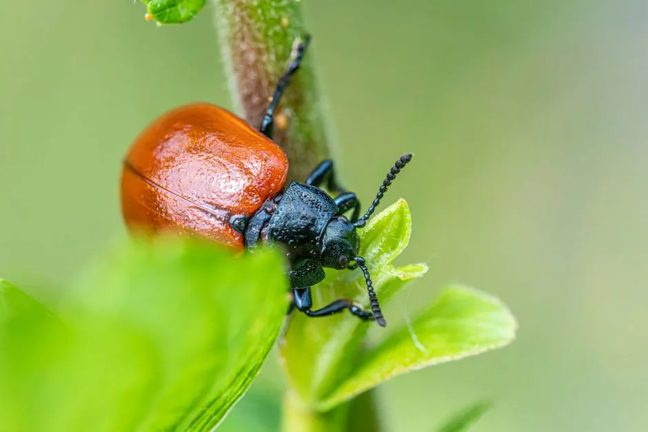

Your local South Corona pest control team
Pest control in South Corona for Ants, Roaches and Rodents
If you need pest control in South Corona, we handle the ants, cockroaches, spiders and rodents that move through Sierra Del Oro, Eagle Glen and The Retreat every week. Our licensed technicians know the hillside properties, newer construction and warm dry summers that push pests indoors here. We inspect, treat and seal the entry points in a single visit, then come back if anything breaks through. Call 951-257-7625 and we will get a technician to your door.
24/7 supportSouth Corona ZIP codesResidential & commercial
Local system knowledge
pest control in South Corona Built for Local Conditions
South Corona pest control CA is not the same job as treating a flat older neighborhood closer to the 91. The housing stock here runs from newer construction in Sierra Del Oro and Dos Lagos to hillside properties along Temescal Canyon, and each one fails differently. Newer homes have tight stucco and slab foundations, so ants and roaches ride in on landscaping and irrigation lines. Hillside homes back up to open ground, which is why rodent control near South Corona is a year-round call rather than a fall-only one. We run bait stations, glue boards and exclusion mesh on the same truck, so we are not making a second trip for supplies. If you want the best pest control South Corona CA has on call, start with a technician who already knows your street.
Explore South Corona services
Pest Control ProsWe serve South Corona because the demand is steady and the problems are specific. Warm dry summers push spider activity up along the ridgelines above Eagle Glen and Mountain Gate. Gated communities with HOA pest control requirements need documentation and scheduling that fits their rules, not a guy who shows up unannounced. And the Temescal Valley area keeps growing, which means new landscaping, new irrigation and new ant pressure every season. We built our route around these patterns so a technician is usually already in the area when you call.
Services available in South Corona
Pest Control Services South Corona California
Every service we run in South Corona is built around the same reality: pests here come in from the hills, the landscaping and the irrigation lines. Whether you need affordable pest control in South Corona CA for a rental or a full exclusion job on a hillside home, we quote before we start and stand behind the work. Here is what we actually do on your street.
01
General Pest Control
Our general pest control in South Corona covers ants, roaches, spiders, earwigs and the occasional scorpion. We treat the perimeter, the garage, the kitchen and the entry points pests actually use, then set bait stations where activity is heaviest. Most homes in Sierra Del Oro and Dos Lagos get a quarterly visit, and we adjust the schedule if the pressure changes.
02Ant Control
Ant control in South Corona CA is mostly about irrigation and landscaping. Argentine ants trail along drip lines and foundation edges, and they split into multiple colonies when you spray the surface. We use bait gel and non-repellent insecticide so the colony takes it back, then seal the cracks and utility penetrations that let them inside. Eagle Glen and Mountain Gate see the heaviest calls.
03Cockroach Control
Cockroach work in South Corona runs two ways: German roaches in kitchens and garages, and larger outdoor species that wander in from the hillside. We inspect with UV flashlights and inspection mirrors, treat harborage with bait gel and insecticide, and seal the gaps behind appliances and cabinets. Newer construction in The Retreat often has the tightest voids, which makes sealing the priority.
04Spider Control
Warm dry summers push spider activity up across South Corona, especially on homes backing open ground near Temescal Canyon. We knock down webs, treat the eaves, patio covers and garage corners, and dust the voids where spiders hide. Black widows show up around irrigation boxes and outdoor furniture, so we check those on every visit rather than assuming the perimeter spray caught them.
05Rodent Control
Rodent control near South Corona is a year-round job on the hillside streets. Roof rats run power lines and palm trees, then drop into attics through vents and gaps. We inspect with mirrors and moisture meters, set rodent traps and bait stations in locked boxes, and seal entry points with exclusion mesh and sealants. Follow-up visits confirm the activity has stopped before we close the job.
More than a service list
How We Execute Pest Control in South Corona
A typical South Corona job starts with a full walk of the exterior. We check the foundation line, the irrigation boxes, the eaves, the garage and any hillside access point. From there we build the treatment around what w
Hillside properties with open ground behind the fence
Homes backing Temescal Canyon and the ridges above Eagle Glen face constant rodent and wildlife pressure. Roof rats and mice move down from open ground into attics and garages, and they do it year-round rather than seasonally, so a one-time treatment rarely holds. How we help: We treat these properties as exclusion jobs first. Our technicians seal vents, gaps and utility penetrations with exclusion mesh and sealants, then set locked rodent traps and bait stations along the exterior wall. We schedule a follow-up visit two weeks out to confirm activity has stopped before we call it done.
Newer construction with fresh landscaping and irrigation
Sierra Del Oro and Dos Lagos have a lot of newer homes where the landscaping went in at the same time as the house. That fresh irrigation feeds Argentine ant colonies, and the drip lines give them a direct path to the foundation. Surface spraying alone splits the colony and makes it worse. How we help: We use bait gel and non-repellent insecticide so the colony carries the material back instead of scattering. Then we seal the foundation cracks and utility penetrations the ants are using. Most of these homes move to a quarterly schedule after the first two visits.
Warm dry summers driving spider activity
From June through October, South Corona stays hot and dry, and spider activity climbs with it. Black widows and wolf spiders show up around irrigation boxes, patio furniture and garage corners. Customers often notice webs before they notice the spiders themselves. How we help: We dust the voids and treat the eaves, patio covers and garage corners where spiders harbor. We also check irrigation boxes and outdoor furniture on every visit, since those are the spots customers miss. A quarterly schedule keeps the webs from rebuilding between visits.
Early warning signs
Signs You Need Pest Control in South Corona
A small visible symptom can point to a bigger pattern.
Ants trailing along counters or foundations
Ants trailing along counters or foundations
Scratching or droppings in the attic
Scratching or droppings in the attic
Roaches scattering when you turn on a light
Roaches scattering when you turn on a light
Webs rebuilding on the patio every week
Webs rebuilding on the patio every week
Clear starting points
Pest Control Pricing and Expectations in South Corona
Typical 2026 pricing for pest control in South Corona runs $180 to $450 for an initial treatment, depending on the pest and the size of the home. Quarterly maintenance plans usually land between $95 and $165 per visit. Rodent exclusion jobs cost more because of the sealing work and the follow-up visits, and hillside properties in Mountain Gate and Eagle Glen often need more exclusion material than a flat lot in Dos Lagos. We quote before we start, so you know the number before a technician picks up a tool. If you want affordable pest control in South Corona CA without surprise line items, ask for the flat-rate quote when you call.
Pest type and severity
A single ant trail along a foundation is a different job than a German cockroach infestation in a kitchen. Roaches and bed bugs take more product, more visits and more follow-up, so they price higher than a routine perimeter treatment. We confirm the pest during the inspection before quoting.
Home size and construction
Larger homes take more product and more time. Newer construction in Sierra Del Oro and The Retreat often has tighter wall voids, which means more sealing work but fewer open harborage areas. Hillside homes with crawl spaces and attics add inspection time to the job.
Exclusion and sealing work
Rodent jobs almost always include exclusion, and that is where the labor goes. Sealing vents, gaps and utility penetrations with exclusion mesh and sealants takes time and material. Homes backing open ground near Temescal Canyon usually need more of both than a home in a built-out subdivision.
We know the route
Landmarks We Use to Navigate South Corona
South Corona is a long, narrow stretch along the 91 and Temescal Canyon, so we orient by landmarks rather than street numbers alone. Dos Lagos Golf Course, Eagle Glen Golf Club and Sierra Del Oro Marketplace are the three reference points our technicians use most when routing calls. If you are near Corona Regional Medical Center or anywhere along Temescal Canyon, we can usually find you without a call back for directions.
Dos Lagos Golf Course
Dos Lagos Golf Course is a useful orientation point for the streets and communities clustered around it. Our technicians use it to route calls in the Dos Lagos area and to estimate drive time from the 91 corridor.
Eagle Glen Golf Club
Eagle Glen Golf Club anchors the eastern side of South Corona and helps us separate Eagle Glen calls from Mountain Gate and Temescal Canyon addresses. It is a reliable reference when a customer gives a cross street instead of a full address.
Sierra Del Oro Marketplace
Sierra Del Oro Marketplace sits near the 91 and is the fastest way for us to locate addresses in the Sierra Del Oro area. We use it as a staging point when scheduling multiple calls in the same afternoon.
Corona Regional Medical Center
Corona Regional Medical Center is a clear landmark for the northern edge of our South Corona coverage. It helps us sort calls that sit between Downtown Corona and the South Corona neighborhoods we serve.
South Corona service coverage
Is your ZIP on the route?
These are our most frequently served ZIP codes. Nearby areas may also qualify — call if you do not see yours.
Popular neighborhoods: Sierra Del Oro · Eagle Glen · The Retreat · Mountain Gate
Check my address →
1234
Primary South Corona response zoneSame-day response depends on current call volume, technician availability, and required equipment.
Reviews from South Corona customers
Reviews From Customers in South Corona
★★★★★
“We had ants coming in along the kitchen counter every morning for weeks. The technician found the trail running along our irrigation line and treated it properly instead of just spraying the surface. Activity stopped in about four days. He also sealed the cracks under the sink that we did not even know were there. Worth every penny.”
★★★★★
“Heard scratching in the attic for a month before I called. They came out the same day, found two entry points at the vents, and set traps in locked boxes so my dog could not get into them. Sealed everything with mesh. Two-week follow-up confirmed nothing new. No more noise at night.”
★★★★★
“We are in a gated community and the HOA requires documentation. They handled the paperwork and left a written service record without me having to ask twice. Roaches were gone by the follow-up visit. Scheduling around the HOA rules was easy, which is more than I can say for the last company we used.”
Outside South Corona?
Nearby Cities and Regional Service Coverage
South Corona pest control FAQ
FAQs About Pest Control in South Corona
Our team can help if your question is not answered here.
Call 951-257-7625How much does pest control cost in South Corona?
Typical 2026 pricing in South Corona runs $180 to $450 for an initial treatment, depending on the pest and home size. Quarterly maintenance plans usually land between $95 and $165 per visit. Rodent exclusion jobs cost more because of the sealing work and follow-up visits. We quote flat-rate before we start, so you know the number up front.
Who is the best pest control company in South Corona?
The best pest control South Corona CA homeowners can hire is one that knows the local terrain, not just the ZIP code. Look for a licensed California Structural Pest Control Board company that handles hillside rodent exclusion, HOA documentation and same-day calls. Ask what they do about roof rats on open-ground properties, and see if the answer is specific.
Do you offer same-day pest control in South Corona CA?
Yes, same-day pest control South Corona CA is usually available if you call before noon. We run routes through Sierra Del Oro, Eagle Glen, The Retreat and Mountain Gate most weekdays, so a technician is often already nearby. Call 951-257-7625 and we will confirm the earliest window for your address.
What pests are common in South Corona California?
The most common calls in South Corona are Argentine ants, German cockroaches, roof rats, black widow spiders and occasional fleas after wildlife activity. Warm dry summers push spider activity up, hillside properties see year-round rodent pressure, and newer construction with fresh irrigation draws ants to the foundation. Each one needs a different treatment approach.
Do you handle emergency exterminator calls in South Corona?
Yes, we offer 24/7 emergency exterminator South Corona California response for active infestations. If you have rodents in the attic, roaches in the kitchen or a wasp nest near an entry, call and tell us what you are seeing. We will bring the right products on the first trip and schedule a follow-up if the job needs one.
South Corona team is ready
Get Pest Control Corona CA Today
Call 951-257-7625 and we will book a free inspection, usually the same day. Licensed, insured, and warrantied work from a local crew that answers the phone. No hidden fees, no upsell.

Talk with the local team
Contact Our Corona Office
Call 951-257-7625 and a real person will answer, day or night. We book same-day inspections when you call before 2 p.m., and we run 24/7 emergency service for urgent problems. Tell us what you are seeing and we will tell you what it takes to fix it.
Live team · Open 24/7
Need pest control? Just call.
No forms and no waiting. Talk to a licensed Corona technician and get your free inspection booked in minutes.
951-257-7625 Tap to call now- Same-day appointments when you call before 2 p.m.
- Free inspection and written estimate
- Emergency response in under 90 minutes
- Licensed, insured and warrantied work
Prefer email? info@pestcontrolcoronaca.com